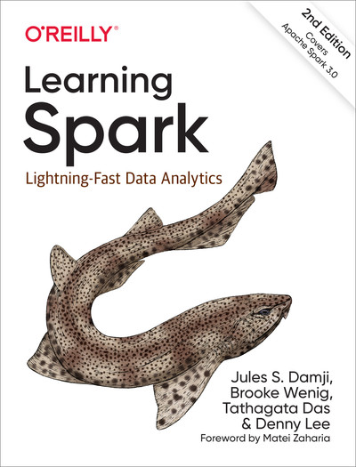

Nowadays we are witnessing the continuous generation of a huge volume of data from heterogeneous sources. Managing, processing, and analyzing such data becomes challenging and requires the adoption of high-performance computing frameworks and techniques. The course discusses the performance bottlenecks in traditional data processing and analytical tools and techniques and presents the opportunities to design scalable solutions leveraging distributed cluster environment architectures. Emphasis is put on the Hadoop and Spark frameworks, with practical examples of big data processing and analytical tasks in real-world applications.
In this course, we will be using the Python programming interface to the Apache Spark framework (PySpark), in combination with Databricks. You will be able to write and execute PySpark code directly in your browser, without worrying about standalone configuration, and leveraging free access to Databricks' powerful cloud infrastructure. This structure also facilitates collaborative coding.
Our course has joined the Databricks University Alliance, an active community of professors and educators who collaboratively share ideas to improve the teaching experience and provide students with most recent and relevant developments in terms of data science tools and concepts adopted in the industry. In order to start using Databricks, you can set up a free personal account. Instructions to sign up will be provided in the course.
| Date | Topic | Module | Deadlines |
|---|---|---|---|
| Week 1 | |||
| Tue., Sep. 1 | Introduction to HPC and Cloud - Online (Zoom) | S1 | |
| Fri., Sep. 4 | Big Data Analytics - Online (Zoom) | S2 - S3 | |
| Week 2 | |||
| Tue., Sep. 8 | Hadoop I - Hybrid | S4 | Install VM |
| Fri., Sep. 11 | Hadoop II - Hybrid | S4 | |
| Week 3 | |||
| Tue., Sep. 15 | NoSQL I: Data Models and Distributed Databases | S5 | |
| Fri., Sep. 18 | NoSQL II: Cassandra and Applications | S5 | |
| Week 4 | |||
| Tue., Sep. 22 | Spark: Intro, RDDs & Databricks Platform | S6 | Create Databricks Account |
| Fri., Sep. 25 | Spark: Dataframes | S6 | |
| Week 5 | |||
| Tue., Sep. 29 | Spark: Transformations | S7 | |
| Fri., Oct. 2 | Spark: Internals | S8 | Pool of Papers Release |
| Week 6 | |||
| Tue., Oct. 6 | Midterm Exam I | ||
| Fri., Oct. 9 | Spark: Structured Streaming / Delta Lakes | S9 | |
| Week 7 | |||
| Tue., Oct. 13 | Spark: ML and MLlib / Linear Regression | S10 | |
| Fri., Oct. 16 | Fall Break (no class) | ||
| Week 8 | |||
| Tue., Oct. 20 | Spark: MLflow / Decision Trees | S11 | |
| Fri., Oct. 23 | Spark: HyperOpt / Random Forest | S12 | |
| Week 9 | |||
| Tue., Oct. 27 | Spark: HyperOpt / AutoML / Gradient Boosted Trees | S13 | |
| Fri., Oct. 30 | Spark: Pandas UDF | S13 | |
| Week 10 | |||
| Tue., Nov. 3 | Spark: Distributed k-Means / Logistic Regression / Collaborative Filtering | S14 | |
| Fri., Nov. 6 | Graph Analysis: GraphX / Case Study / GraphFrames | S15 | Project Guidelines |
| Week 11 | |||
| Tue., Nov. 10 | Deep Learning / Hyperopt / Transfer Learning / One-Class | S16 | |
| Fri., Nov. 13 | Deep Learning: Horovod | S17 | Paper critiques submission |
| Week 12 | |||
| Tue., Nov. 17 | Deep Learning: Model Interpretability | S17 | |
| Fri., Nov. 20 |
Spark: NLP
Invited Guest |
S18 | Project: Data Exploration / Pre-processing |
| Week 13 | |||
| Tue., Nov. 24 | Spark: ML Deployment / ML in Production | S19 | Project: Modeling |
| Fri., Nov. 27 | Thanksgiving Holiday (no class) | ||
| Week 14 | |||
| Tue., Dec. 1 | Midterm Exam II | ||
| Fri., Dec. 4 | Spark: Performance Optimization | S20 | |
| Week 15 | |||
| Tue., Dec. 8 | Paper Presentations | ||
| Fri., Dec. 11 | Paper Presentations | Project submission | |
| Component | Weight |
|---|---|
| Midterm Exams (2) | 40% (2 x 20%) |
| Research Papers: 2 critiques + 1 presentation | 20% |
| Final Project | 30% |
| In-class activities | 10% |
| Component | Weight |
|---|---|
| Midterm Exams (2) | 30% (2 x 15%) |
| Research Papers: 3 critiques + 1 presentation | 20% |
| Final Project | 40% |
| In-class activities | 10% |
Students are recommended to attend all lectures. Prolonged absences must be discussed with the instructor. If you cannot attend lectures regularly due to work or other obligations, please reach out to the instructor so that I know about it.
Exams cover the material from the lectures, projects, and reading. While not necessarily cumulative, each exam will require understanding many of the concepts covered in the preceding exams. Exams consist of multiple choice, short answer, and long answer questions. Each exam is weighted equally within the corresponding grading structure.
For the Final Project, students will propose their own topic in consultation with the instructor.
A penalty of 5% per day will be levied. The course does not grant extensions on homework, lab, or project submission deadlines unless you have an extremely compelling excuse, such as observance of a religious holiday, in which case you need to let me know in advance.
| Range | Letter |
|---|---|
| >=93 | A |
| >=90 | A- |
| >=87 | B+ |
| >=83 | B |
| >=80 | B- |
| >=77 | C+ |
| >=73 | C |
| >=70 | C- |
| >=60 | D |
| <60 | F |
Even though we encourage collaboration with a partner, sharing code between groups is strictly forbidden - this is a form of plagiarism. As is showing your work to other students, even just for a second. There is rarely one single correct way to write code that solves a problem.
While we want you to feel free to discuss your approach freely with a partner, you should know that there are often many solutions for a given problem and it is typically obvious when one student shares code with another.
If you directly copy and paste code from the Internet (or even text), cite your source in your comments, but also ensure that you understand what the code is doing - not all code on the web is good.
Assignments will be checked using plagiarism detection software and by hand to ensure the originality of the work.
Do not share your code with anyone other than a partner. Do not let someone look at your screen. You may get behind, or your friend may ask for help, but the consequences for plagiarism are far worse than an incomplete submission.
If I suspect that you have purposely shared code with another student or presented someone else's work as your own, the matter will be referred to the Academic Integrity Code Administrator for adjudication.
If you are found responsible for an academic integrity violation, sanctions can include a failing grade for the course, suspension for one or more academic terms, dismissal from the university, or other measures as deemed appropriate by the Dean.
All students are expected to adhere to the American University Honor Code. If you have a question about whether or not something is permissible, ask the instructor or the TA first.
This course partially adopts the textbook "Learning Spark", 2nd Edition, published by O'Reilly Media, Inc.
The online version of the book may be accessible for free from AU’s online Library .
After selecting "O’Reilly Online Learning" from the list and logging in with your AU account, you should be able to search for the book by name, or try accessing it from this link .
Additional learning resources in the form of slides, readings, and coding examples will be provided on Canvas throughout the course.

In regards to Generative AI models such as ChatGPT, you may use them only for homework assignments to assist you in coding the outline of your pipeline or trobleshooting specific parts.
The use of AI models should be reasonable and responsible. For example, AI-generated code may contain technical or conceptual issues that should be manually fixed. Another issue is adopting programming concepts and libraries not seen in class. Both scenarios will be considered as a deviation from the prompt and will be subject to grade penalties.
If you use such models, acknowledge which parts were facilited by AI in your report accompanying the code submission. You should not use them to generate complete solutions to the homework problems in this course that you submit as your own work.
It is reasonable to expect that tools like this will eventually be integrated into the workflows of many businesses in the future, however, while you are still learning the fundamentals of computer science the process of designing machine learning pipelines and writing code is just as important as the final outcome. Complete solutions to coding exercises generated by AI models are considered academic plagiarism, and will be referred to the Academic Integrity Office of American University just as if you had copied the work of a friend, website, or online tutor.